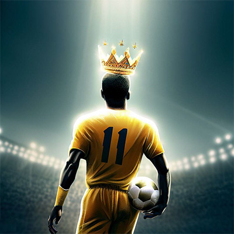
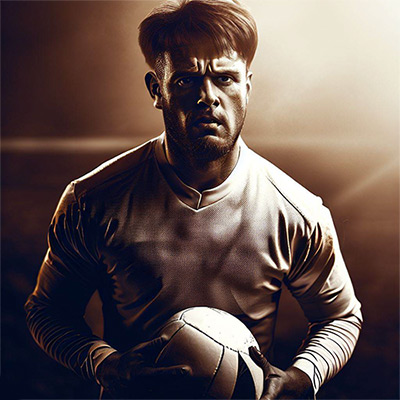

Roberto O Mágico
da Silva

Roberto da Silva nasceu em uma favela no Rio de Janeiro e cresceu jogando futebol na rua com seus amigos. Sua habilidade com a bola era tão grande que chamou a atenção de um treinador de um time de base da cidade. Com sua técnica impressionante e seu talento nato, Roberto rapidamente se destacou nas categorias de base e se tornou profissional aos 18 anos. Ele ganhou o apelido de "O Mágico" por causa de suas jogadas incríveis, que deixavam os adversários sem reação. Roberto foi um dos maiores ídolos do futebol brasileiro, conquistando títulos e prêmios por onde passou.
Diego El Tigre
Rodriguez

Diego Rodriguez nasceu em uma família pobre no interior da Argentina e desde cedo se destacou no futebol de rua. Com suas habilidades impressionantes e espírito competitivo, ele acabou chamando a atenção de um olheiro de um time da capital. Rapidamente, Diego se tornou um dos principais jogadores da equipe, sendo apelidado de "El Tigre" por sua garra e determinação. Com o tempo, ele se transferiu para times maiores e se tornou uma lenda do futebol, conhecido por sua técnica apurada e pelos seus gols espetaculares.
Alexei O Tanque
Petrov
Alexei Petrov nasceu em uma cidade no interior da Rússia e desde criança se apaixonou pelo futebol. Com seu físico imponente e sua força de vontade, Alexei se tornou um centroavante implacável, que intimidava os zagueiros adversários. Ele ganhou o apelido de "O Tanque" por sua habilidade de derrubar defesas inteiras e marcar gols importantes. Alexei se tornou uma lenda do futebol russo e europeu, sendo conhecido por sua presença de área e pelo seu faro de gol.
Maria La Dama
Hernandez
Maria Hernandez nasceu em uma cidade no interior da Espanha e desde criança se destacava pela sua habilidade com a bola. Ela sonhava em ser jogadora de futebol, mas enfrentou muitos preconceitos por ser mulher. Determinada a seguir seu sonho, Maria treinou incansavelmente e se tornou uma das melhores jogadoras de futebol do mundo. Ela ganhou o apelido de "La Dama" por sua elegância e técnica refinada em campo. Maria foi uma das primeiras jogadoras de futebol a conquistar reconhecimento internacional, sendo uma inspiração para muitas outras mulheres que sonham em jogar futebol profissionalmente.
Voltar para pagina inicial